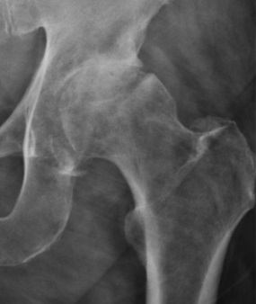

Ficha del catálogo
Artrosis de cadera (coxartrosis)
- Sistema
- Óseo
- Modalidad
- RX
- Región
- Cadera
- Dificultad
- Básico
La artrosis es la enfermedad articular más frecuente y la radiografía simple sigue siendo su método diagnóstico principal. En la cadera se manifiesta con un conjunto de cuatro signos que conviene memorizar porque se repiten en cualquier articulación.
Técnica
Proyección anteroposterior de pelvis en decúbito supino con rotación interna de 15° de ambos pies, que permite comparar las dos caderas en la misma imagen.
Qué observar
- Disminución del espacio articular, habitualmente asimétrica y de predominio superolateral
- Esclerosis subcondral: Banda blanca y densa en el hueso que soporta la carga
- Osteofitos en los márgenes de la cabeza femoral y del acetábulo
- Quistes subcondrales o geodas: Imágenes redondeadas radiolúcidas bajo la superficie articular
- Deformidad progresiva de la cabeza femoral en fases avanzadas
- Comparación con la cadera contralateral
Hallazgos
Reducción del espacio articular coxofemoral con esclerosis subcondral y formación de osteofitos, hallazgos característicos de enfermedad articular degenerativa.
Perlas
Los cuatro signos de la artrosis (pinzamiento, esclerosis, osteofitos y quistes) sirven para rodilla, hombro, manos y columna. Es de los patrones más rentables de aprender en toda la radiología musculoesquelética.
Diagnóstico diferencial
- Artritis inflamatoria de cadera
- El pinzamiento articular es concéntrico y uniforme, con erosiones y osteopenia yuxtaarticular, y con escasa formación de osteofitos.
- Necrosis avascular de la cabeza femoral
- Al inicio el espacio articular se conserva y lo que aparece es esclerosis en banda, línea subcondral radiolúcida y aplanamiento del contorno superior de la cabeza.
- Artritis séptica
- Hay pérdida rápida y difusa del espacio articular con erosión de ambas superficies y aumento de partes blandas, en un cuadro clínico agudo y febril.
- Displasia del desarrollo de la cadera en el adulto
- El acetábulo es poco profundo y oblicuo con cobertura insuficiente de la cabeza femoral, y la artrosis que se desarrolla es secundaria y precoz.
- Pinzamiento femoroacetabular
- Se identifica una prominencia en la unión cabeza-cuello o una sobrecobertura acetabular con signo de cruce, en pacientes jóvenes y antes de que aparezca artrosis establecida.
- Condrocalcinosis
- Se ven calcificaciones lineales en el cartílago articular y en el labrum, que pueden coexistir con cambios degenerativos pero tienen aspecto propio.
Simuladores
- Una proyección rotada o mal centrada estrecha aparentemente el espacio articular (conviene verificar la simetría de los agujeros obturadores y de los trocánteres menores antes de informar pinzamiento).
- El estudio en decúbito subestima el pinzamiento real porque no hay carga: En casos dudosos la proyección en bipedestación es más fiel.
- Las calcificaciones vasculares y los flebolitos pélvicos pueden proyectarse sobre la articulación y confundirse con osteofitos o cuerpos libres.
- La superposición del gas intestinal genera zonas oscuras que simulan geodas subcondrales, pero cambian de posición entre proyecciones.
Por modalidad
- RX
- Es el método de referencia para el diagnóstico y la graduación: Muestra los cuatro signos clásicos y permite planificar la prótesis.
- TC
- Define mejor la geometría acetabular, los cuerpos libres intraarticulares y el hueso remanente en la planificación quirúrgica.
- RM
- Detecta cambios precoces del cartílago, lesiones del labrum, edema óseo y necrosis avascular antes de que se altere la radiografía.
- US
- Sirve para valorar derrame articular, bursitis y patología tendinosa periarticular, y para guiar punciones e infiltraciones.
Protocolo
Proyección anteroposterior de pelvis con el paciente en decúbito supino, pelvis simétrica y ambos pies en rotación interna de unos 15°, con rayo central dirigido al punto medio entre la sínfisis púbica y una línea que une las espinas ilíacas anterosuperiores. Cuando interesa cuantificar el pinzamiento real se prefiere una anteroposterior en bipedestación con carga. Se completa con una proyección lateral de la cadera sintomática. En estudios prequirúrgicos se incluye un marcador de escala para calibrar el tamaño de los implantes.
Clasificación
La escala de Kellgren y Lawrence es la más difundida y gradúa la artrosis de cero a cuatro: Sin cambios; dudoso, con osteofito mínimo; leve, con osteofito definido y espacio articular todavía conservado; moderado, con pinzamiento evidente y esclerosis; y grave, con pinzamiento marcado, esclerosis extensa, quistes y deformidad ósea. En la cadera se usa además la clasificación de Tönnis, que se apoya sobre todo en la magnitud del pinzamiento, la esclerosis, los quistes y la deformidad de la cabeza femoral, y resulta práctica para el seguimiento y para la indicación quirúrgica.
Errores frecuentes
- Graduar la artrosis sobre un estudio en decúbito y sin carga, con lo que se infraestima el pinzamiento.
- Atribuir todo el dolor a la artrosis radiológica sin correlacionar con la clínica ni considerar causas extraarticulares como bursitis o dolor lumbar irradiado.
- Pasar por alto una necrosis avascular incipiente por fijarse solo en el espacio articular.
- No comparar ambas caderas ni valorar la morfología acetabular, con lo que se pierde la causa de una artrosis secundaria en un paciente joven.

artrosis coxartrosis cadera osteofitos degenerativo esclerosis